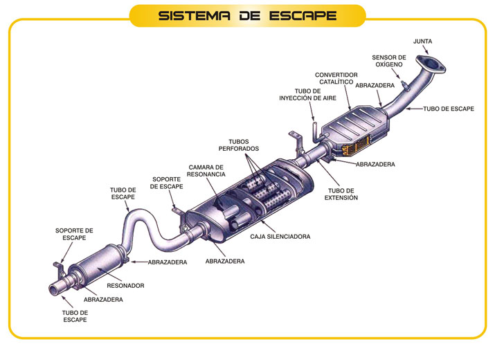

El sistema de escape es una de las partes esenciales de los carros ya que cumple con dos funciones de suma importancia para el buen funcionamiento del vehículo y la seguridad de los ocupantes:
1.- Expulsar fuera del coche los gases tóxicos producidos durante la combustión.
2.- Reduce el ruido que se produce cuando los gases son expulsados.
El principal gas que ayuda a eliminar es el monóxido de carbono, el mismo que es bastante tóxico y cuya acumulación en la cabina puede ocasionar dolores de cabeza, náuseas, desmayos, y en el peor de los casos, la muerte.
Es importante señalar que el sistema de escape generalmente influye sobre el funcionamiento del motor. Si la salida de los gases es demasiado libre la potencia del motor se verá aumentada, ya que, los cilindros y toda la cavidad de la cámara de combustión se vaciará con mejor facilidad durante cada explosión, sin embargo, en consecuencia, el motor se calentará mucho más y se aumentará el consumo de combustible. Por otro lado, si el sistema está muy obstruido, el motor tendrá falta de potencia.
Partes principales de un sistema de escape:
• Válvulas de escape.
• Múltiple de escape.
• Sensores de oxígeno.
• Convertidor catalítico.
• Silenciador.
• Salida.

Sensor de oxigeno o sonda Lambda
Este sensor está situado a la salida del colector de escape del motor, analiza los gases de escape, y envía información constantemente a la computadora del motor que adecua la mezcla de oxigeno – gasolina dependiendo el trabajo que realiza nuestro motor.
Catalizador o convertidor catalítico
El catalizador es un elemento primordial a la hora de tratar los gases perjudiciales que salen por el tubo de escape de los automóviles. El catalizador tiene como misión disminuir los elementos contaminantes contenidos en los gases de escape de un vehículo mediante la técnica de la catálisis. El catalizador es un dispositivo, que se monta en el tubo de escape, inmediatamente después del colector de escape.
Sistema de recirculación de gases de escape (EGR)
La válvula EGR se encuentra ubicada entre el colector de admisión y el de escape donde hace las veces de comunicador, permitiendo que parte de los gases de escape vuelvan a la cámara de combustión a través del colector de admisión para que se vuelvan a quemar.
Sistema cerrado de control evaporativo (Canister)
El canister (también conocido como EVAP), es un sistema provisto de válvulas y tuberías que le permite recolectar los vapores de gasolina que se producen en el tanque de combustible, para almacenarlos temporalmente en un depósito, hasta que sean quemados en la admisión.
La gasolina es un elemento muy volátil que se inflama a temperatura ambiente con mucha facilidad, la cantidad de vapores que se pierden puede ser de un 20%, este tipo de emisiones evaporativas se van al medio ambiente, por esta razón fueron implementados desde los sistemas de carburador hasta los sistemas de inyección actuales.